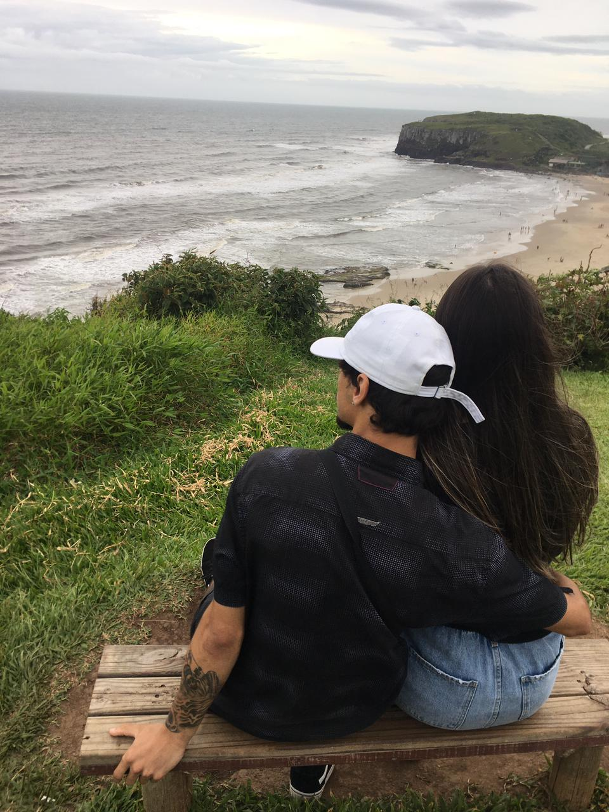
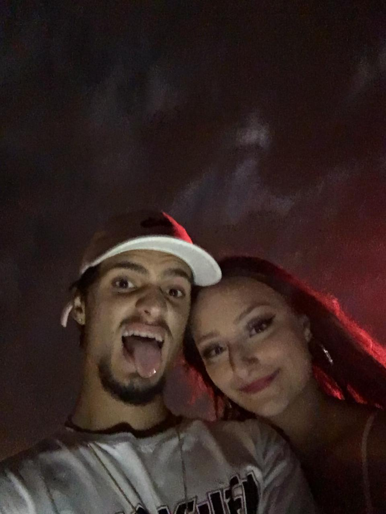

DATES
- Primeira viagem juntos, fomos para gramado para comemorar meu aniversário. Foi tudo incrível, nos divertimos muito. Fizemos piquenique, andamos de bondinho aéreo, vimos uma cachoeira muito linda, andamos por uma floresta pequena e na volta eu quase nos matei kkkkkk. 14/06/2020
- Noite challenge de casal kkkkk, invertemos os papéis essa noite, um produziu o outro, ela como adora me maquear já me atacou com os pincéis, tudo isso para depois fazermos um vídeo que eu acabei caindo e acabou ficando engraçado. 02/08/2020
- O dia tão esperado por todos, o dia em que eu á pedi em namoro, foi quase cena de filme, eu fingi uma queda na pista de skate para chamar a atenção dela, quando ela foi me ajudar puxei as alianças, uma amiga trouxe o buquê e eu á pedi em namoro. 10/10/2020
- Segunda viagem juntos, novamente para gramado, fomos visitar uma pousada linda no topo de uma montanha, comemos comidas chiques e tiramos altas fotos, vimos uns gansos também, mas não tivemos coragem de chegar perto por causa dos "guardinhas". A vista da montanha era linda, mas nada se comparava a beleza dela! 31/10/2020
- Primeira vez que fomos juntos à praia, choveu na primeira noite mas depois o tempo melhorou. Jogamos vôlei, fomos a pista de skate, andamos pela praia, foi maravilhoso molhar os pés de mãos dadas com ela andando pela praia à noite com a lua linda como estava. 27/12/2020
- Primeiro ano novo juntos, passamos na praia com mais um casal de amigos, foi incrível, não conseguimos tirar foto com os fogos, mas quem se importa né, o momento foi maravilhoso, tudo ao lado dela é maravilhoso! Teve até uma hora que um dos fogos deu errado e voltou para as pessoas da praia, ninguém se machuchou e foi engraçado kkkk. Primeiro ano novo de muitos! 01/01/2021
- O dia que visitamos nossa primeira cachoeira juntos, fomos com uns amigos, nos divertimos muito, teve muito vôlei, fizemos um salsipão que estava muio bom, mais uma viagem que nós eramos os adultos responsáveis kkkkk. 10/01/2021
- Nosso primeiro carnaval juntos, alugamos uma casa na praia junto com uns amigos, compramos fantasias simples, mas recebemos vários elogios, tudo ideia dela, fomos de havaianos. 14/02/2021



